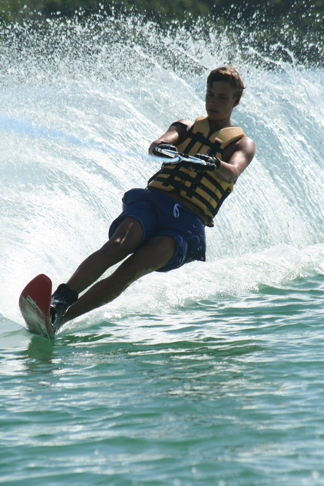

Meet the Team

Name: Eamon Devaney
Background: Born and raised in Oxford, made in SE1
Describe your main motivations for undertaking the Mongol Rally: Like a true Mongol, I'm a bit nomadic and love to be on the move exploring new places and cultures. I've wanted to travel to Central Asia for sometime now, and there seems no better way to embrace the region than by driving a rusty Nissan Micra straight through the heart of it.
Outline the relevant skills you bring to the team: From previous travels I've discovered that I'm very talented at playing the dumb, lost tourist when trouble strikes [which it inevitably will do]. I've driven to Devon so have a rough idea of how monotonous long drives can be. I also made this website using my questionable coding skills which I'm sure will prove valuable on the road. Finally I'm a bit of a magician when it comes to Instagram hashtags so watch this space.
Which part of the route are you most excited about: With my historical bias, I'm really keen to visit some of the old Silk Road cities in Uzbekistan, such as Khiva, Bukhara and Samarkand, but I also think that Bosnia and Herzegovina and Montenegro could be absolute gems as well.

Name: Gabriel Hamlyn
Background: Dragged up in Mile End, polished off in Crundale
Describe your main motivations for undertaking the Mongol Rally: As a car and travel fanatic who likes to test himself to the limit, the Mongol Rally was an obvious choice
Outline the relevant skills you bring to the team: As a Statistics student, my quantitive aptitude should come in handy for stuff like budgeting and rationing supplies. I like to think I'm endowed with lots of common sense and am also a phenomenal linguist as long as they speak English
Which part of the route are you most excited about: The lap of Goodwood and potentially the Nürburgring are obvious candidates as a Formula One racing fan. Overall though, the opportunity the visit many a country to whom which I am unlikely to return and as someone who likes to laugh in the face of danger, I believe this 5-week campaign to Ulan-Ude provides a unique lens from which to view the world.
